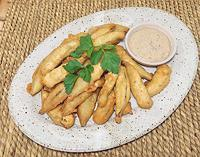

|
Okra, Batter FriedPuerto Rico - Quimbombo Rebozado | ||||
| Makes: Effort: Sched: DoAhead: |
18 ea *** 40 min Prep |
These light vegetable fritters with dip make a very fine appetizer. They are also pretty easy to make. Fritters are very popular in the Caribbean. | |||
|
|
6 ------- 3/4 1/2 1/4 5 1 ------- ar ------- ar |
oz ---- c t t oz lrg ---- ---- |
Okra Pods (1) -- Batter Flour all purp. Salt Pepper Beer, light Egg ----------- Oil, deep fry (2) -- Serve With Dip (3) |
Prep - (8 min)
|